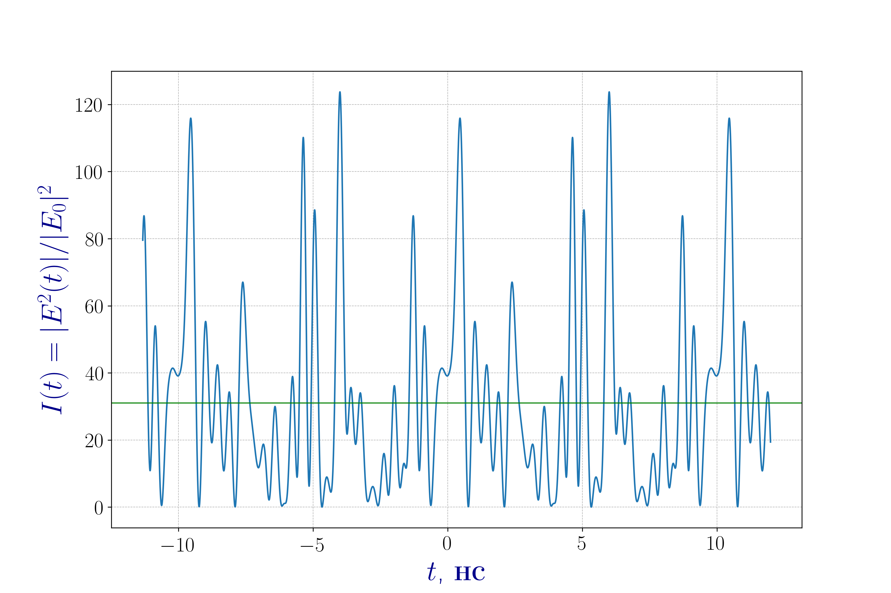
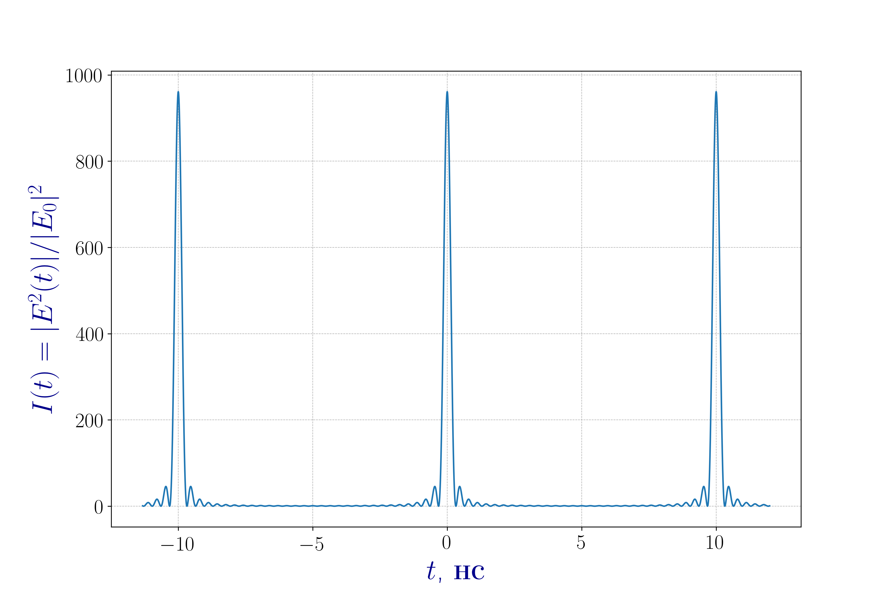
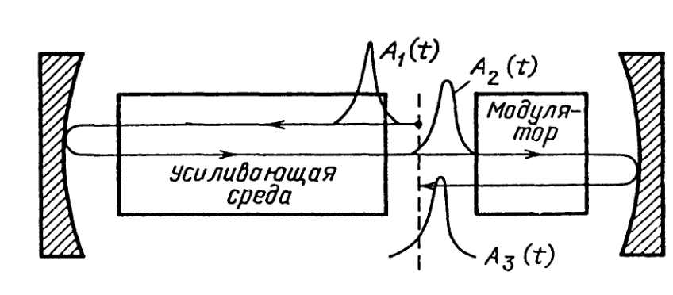

Синхронизация мод в твердотельном лазере YAg:Nd$^{3+}$
Сунцов Демид Андреевич
Илларионов Владислав Иванович
Теоретические основы синхронизации мод
Полное электрическое поле $E(t)$ электромагнитной волны в резонаторе с $2n+1$ поперечными модами
\[ E(t) = \sum_{l=-n}^n E_0 exp(i \omega_l t + \varphi_l)\]Условие синхронизации фаз
\[ \varphi_{l+1} - \varphi_{l} = \varphi = \text{const}, \quad l = -n, ..., n, \quad (\varphi_0 = 0) \] \[ E(t) = \sum\limits_{l = -n}^{n} E_0 \exp \left( i (\omega_0 + l \Delta \omega) t + l \varphi \right) \]В общем случае фазы $\varphi_l$ являются случайными величинами.
Теоретические основы синхронизации мод

Зависимость приведенной интенсивности $I(t) = |E(t)|^2/|E_0|^2$ от времени в неодимовом лазере Nd$^{3+}$:YAg.
Число мод $2n+1 = 31$. Межмодовое расстояние $\Delta \nu = 100$ МГц. Центральная частота $\nu = 2{,}82 \cdot 10^{14}$ Гц ($\lambda = 1{,}064$ мкм)
Теоретические основы синхронизации мод
Представление электрического поля в виде синусоиды с модулированной по времени амплитудой
\[ E(t) = A(t) \exp \left( i \omega_0 t \right), \quad A(t) = \sum\limits_{l = -n}^{n} E_0 \exp \left( i l ( \Delta \omega t + \varphi) \right) \]Замена переменных
\[\Delta \omega t' = \Delta \omega t + \varphi\]Сумма геометрической прорессии
\[A(t') = E_0 \frac{\sin((2n+1) \Delta \omega t' / 2)}{\sin(\Delta \omega t' / 2)}\]Теоретические основы синхронизации мод

Синхронизация мод в неодимовом лазере. Параметры лазера совпадают с параметрами,
использованными в зависимости $I(t)$ для случайного распределения мод.

Методы синхронизации мод
- активная синхронизация мод — потери или усиление в резонаторе модулируются внешним сигналом;
- пассивная синхронизация мод — внутрь резонатора помещается нелинейный оптический элемент, за счёт которого осуществляется синхронизация мод.
Активная синхронизация мод

Схема лазера с активной синхронизацией мод. Иллюстрация формирования ультракороткого импульса
Прохождение импульса через активную среду
где $g(\omega)$ -- коэффициент усиления
\[g(\omega) = \exp(ikL) = \exp \left(i \frac{\omega}{c} \sqrt{\varepsilon(\omega)}L \right)\]Выражение для коэффициента электрической проницаемости
\[\varepsilon(\omega) = 1 + \frac{4\pi N e^2}{m} \frac{1}{\omega_1^2 - \omega^2 - 2i \omega \gamma}\]Резонансная частота $\omega_1$ смещена относительно собственной частоты молекулярного осциллятора $\Omega$
\[\omega_1^2 = \Omega^2 - \frac{4\pi}{3} \frac{e^2}{m} N\]Для случая почти точного резонанса
\[k = \frac{\omega}{c} \sqrt{\varepsilon(\omega)} \approx \frac{\omega}{c} - iN \frac{\sigma}{2} (1 - i (\omega - \Omega) T_2 - (\omega - \Omega)^2 T_2^2 + ...)\]$\sigma$ — сечение усиления на резонансном переходе со временем дефазировки $T_2$.
$G_0 = \sigma N L$ — полное насыщение усиления в центре резонансного перехода
Акустооптический модулятор
C учётом потерь на одном из зеркал
\[T(t) = \frac{A_3(t)}{A_2(t)} \approx \sqrt{R_1} \exp(- m \omega^2_{\text{м}} t^2)\]В установившемся режиме работы лазера форма импульса $A_3(t)$, совершившего полный обход по резонатору, должна совпадать с формой исходного импульса $A_1(t)$
\[A_3(t) = A_1(t)\]Поиск решения
Решение уравнения следует искать в виде импульса с гауссовой огибающей и линейным изменением (чирпом) частоты во времени:
\[A_1(t) = A \exp \left[ - \frac{1}{2} \left( \frac{t}{\tau_p} \right)^2 \right] \exp \left( -i \Omega t - i \frac{\alpha t^2}{2} \right)\]Выполняя необходимые преобразования, получаем, что самосогласованность решения удовлетворяется при $\alpha = 0$